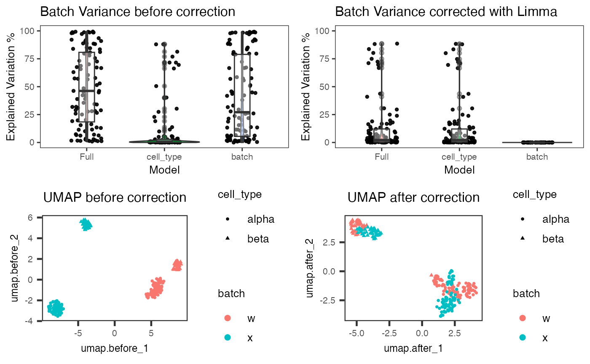

R/plotBatchVariance.R
plotBatchCorrCompare.RdPlot comparison of batch corrected result against original assay
plotBatchCorrCompare( inSCE, corrMat, batch = NULL, condition = NULL, origAssay = NULL, origLogged = NULL, method = NULL, matType = NULL )
| inSCE | SingleCellExperiment inherited object. |
|---|---|
| corrMat | A single character indicating the name of the corrected matrix. |
| batch | A single character. The name of batch annotation column in
|
| condition | A single character. The name of an additional covariate
annotation column in |
| origAssay | A single character indicating what the original assay used for batch correction is. |
| origLogged | Logical scalar indicating whether |
| method | A single character indicating the name of the batch correction method. Only used for the titles of plots. |
| matType | A single character indicating the type of the batch correction
result matrix, choose from |
An object of class "gtable", combining four ggplots.
Four plots will be combined. Two of them are violin/box-plots for percent variance explained by the batch variation, and optionally the covariate, for original and corrected. The other two are UMAPs of the original assay and the correction result matrix. If SCTK batch correction methods are performed in advance, this function will automatically detect necessary input. Otherwise, users can also customize the input. Future improvement might include solution to reduce redundant UMAP calculation.
Yichen Wang
sceBatches <- scaterlogNormCounts(sceBatches, "logcounts") sceBatches <- runLimmaBC(sceBatches) plotBatchCorrCompare(sceBatches, "LIMMA", condition = "cell_type")#>#>#>#>#>#>#>#>#>#>#>#>#> Warning: Removed 51 rows containing missing values (geom_point).